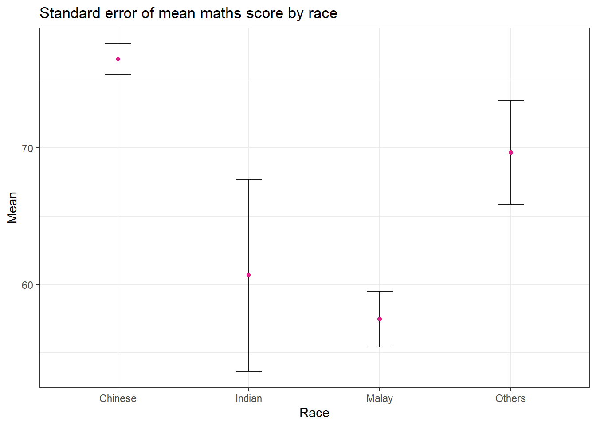
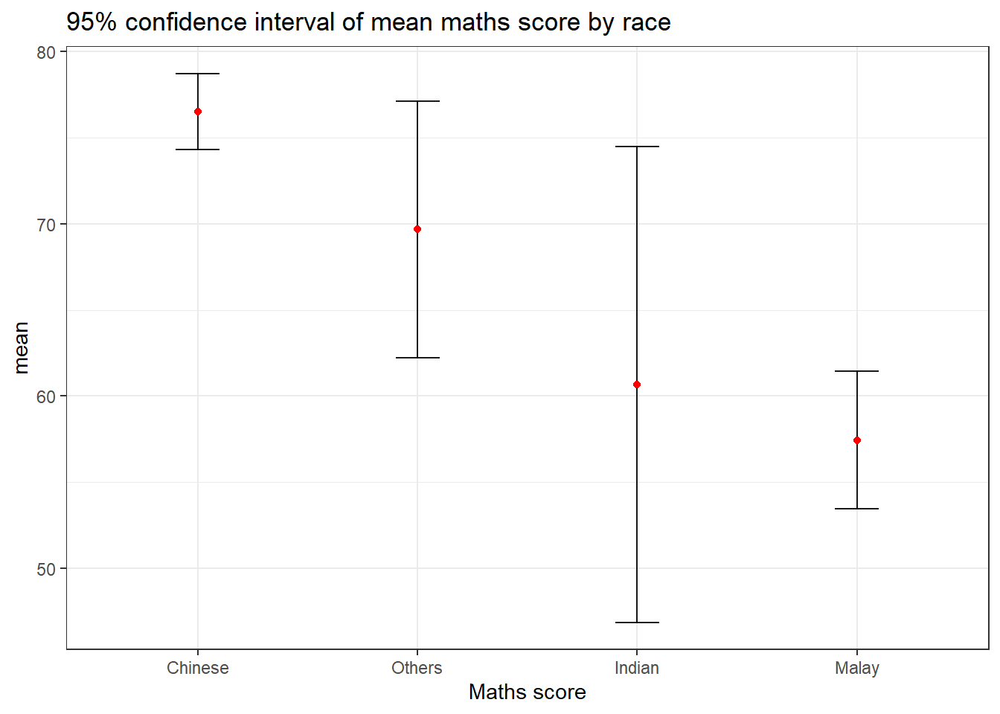
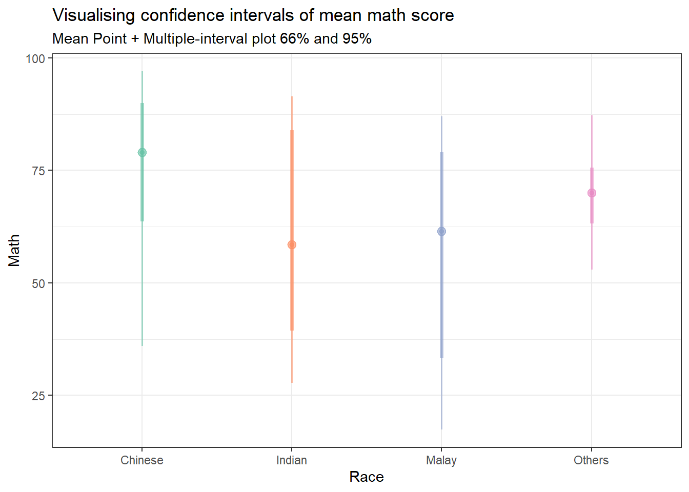
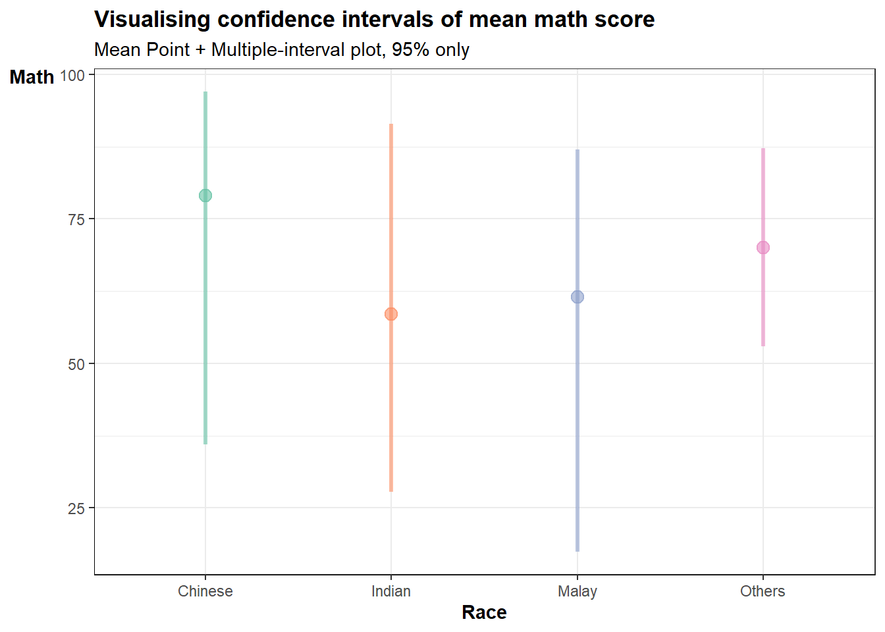
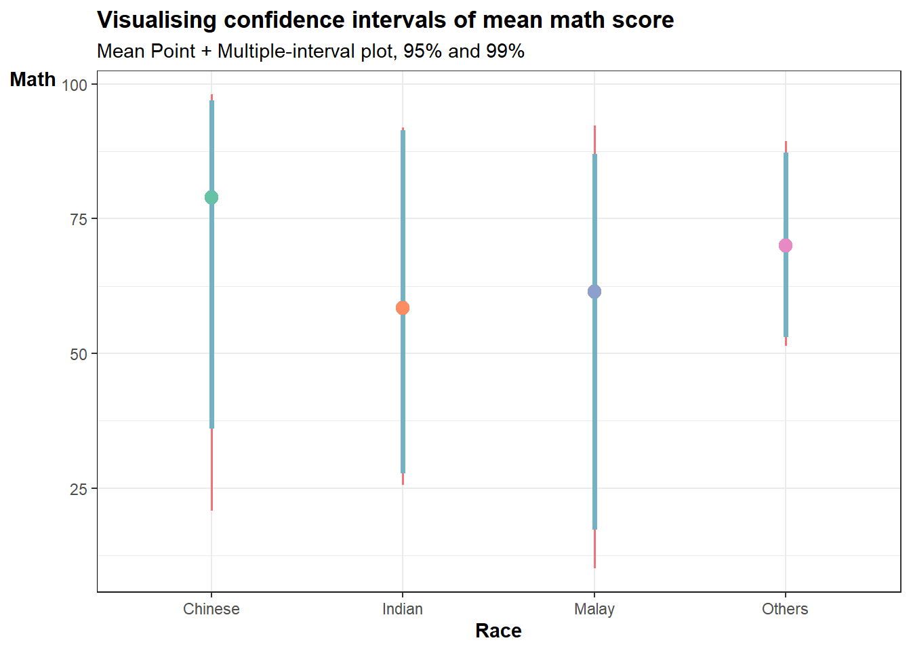
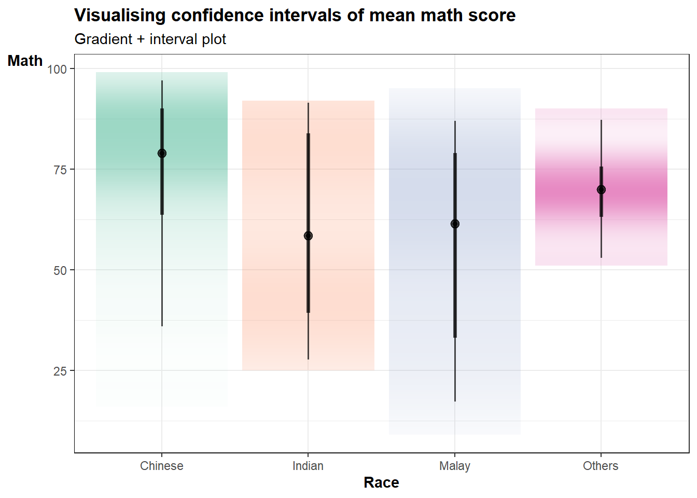
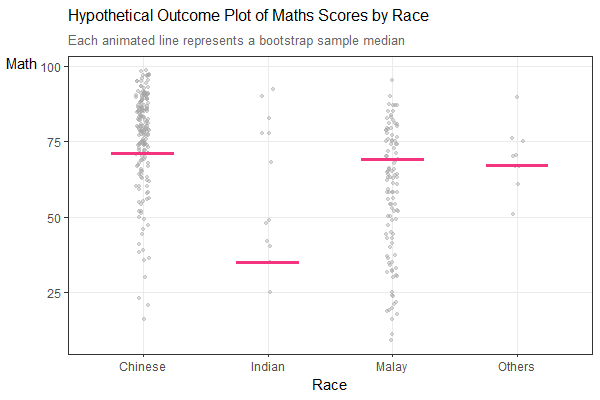

Show the code
devtools::install_github("wilkelab/ungeviz")
pacman::p_load(ungeviz, plotly, crosstalk,
DT, ggdist, ggridges,
colorspace, gganimate, tidyverse,
ggiraph)Visualising uncertainty poses a significant challenge in data visualisation. When we observe a data point placed at a particular location, we often perceive it as an exact reflection of the true data value. It’s hard to grasp that the data point might actually exist within a range beyond where it’s plotted. This situation is common in data visualisation, as nearly every dataset contains some degree of uncertainty. The decisions we make about whether and how to depict this uncertainty can greatly impact how accurately our audience understands the data’s significance.
In this chapter, we shall focus on creating statistical graphics for visualising uncertainty, including:
We shall use the following packages:
devtools::install_github("wilkelab/ungeviz")
pacman::p_load(ungeviz, plotly, crosstalk,
DT, ggdist, ggridges,
colorspace, gganimate, tidyverse,
ggiraph)We shall use the Exam_data.csv dataset.
exam <- read_csv('data/Exam_data.csv')A point estimate is a single number, such as a mean. Uncertainty is expressed as standard error, confidence interval, or credible interval.
 Standard Deviation vs Standard Error
Standard Deviation vs Standard Error
Standard Deviation (SD):
Standard Error (SE):
Key analogy:
Imagine taking 100 different samples of students and computing the mean score for each sample. Those 100 means will themselves form a distribution — the Standard Error is the SD of that distribution of means. This is what is referred to as the “mother of all means” — the theoretical distribution of all possible sample means.
In simple terms:
| Standard Deviation (SD) | Standard Error (SE) | |
|---|---|---|
| What it measures | Spread of individual values | Spread of sample means |
| Operates at | Individual data level | Sample mean level |
| CLT perspective | Describes spread of population or one sample | Describes how much sample means vary around the population mean |
| Formula | \(s = \sqrt{\frac{\sum(x_i - \bar{x})^2}{n}}\) | \(SE = \frac{SD}{\sqrt{n}}\) |
| Effect of larger \(n\) | Not affected | Decreases — larger \(n\) = smaller SE = more reliable mean |
| Used for | Describing variation in data | Describing uncertainty of the mean estimate |
| Answers | “How spread out are the individual scores?” | “How reliable is my sample mean as an estimate of the population mean?” |
The code chunk below performs the following:
group_by() of dplyr package groups the observation by RACE,summarise() computes the count of observations, mean, standard deviation and standard error of Maths by RACE,mutate() is used to derive standard error of Maths by RACE, andmy_sum and displaying it as a tibble dataframe in html table.my_sum <- exam %>%
group_by(RACE) %>%
summarise(n=n(),
mean=mean(MATHS),
sd = sd(MATHS)) %>%
mutate(se=sd/sqrt(n-1)) #<<< standard error formula
knitr::kable(head(my_sum), format = 'html')| RACE | n | mean | sd | se |
|---|---|---|---|---|
| Chinese | 193 | 76.50777 | 15.69040 | 1.132357 |
| Indian | 12 | 60.66667 | 23.35237 | 7.041005 |
| Malay | 108 | 57.44444 | 21.13478 | 2.043177 |
| Others | 9 | 69.66667 | 10.72381 | 3.791438 |
 SE Bars vs Confidence Interval (CI)
SE Bars vs Confidence Interval (CI)
Standard Error (SE) bars and Confidence Intervals (CI) both visualise uncertainty around a mean, but they differ in interpretation:
SE bars show \(\bar{x} \pm SE\) — they represent the precision of the sample mean as an estimate of the population mean. They are narrower and do not directly tell you the probability of capturing the true mean.
Confidence Intervals show \(\bar{x} \pm z \times SE\) — they represent a range that is likely to contain the true population mean with a specified probability (e.g. 95% or 99%). The multiplier \(z\) depends on the confidence level:
| SE Bars | Confidence Interval | |
|---|---|---|
| Formula | \(\bar{x} \pm SE\) | \(\bar{x} \pm z \times SE\) |
| Width | Narrower | Wider — depends on confidence level |
| Interpretation | Precision of sample mean | Range likely containing true population mean |
| Common usage | Quick visual comparison between groups | Formal statistical inference |
| Example | \(\bar{x} \pm 1.13\) | \(\bar{x} \pm 1.96 \times 1.13\) for 95% CI |
In short — SE bars are a building block of CI. A wider CI means more uncertainty about where the true population mean lies.
stat = 'identity' means that the y values in the geom_point layer correspond to the actual values in the data frame, rather than a summary statistic like mean or median.ggplot(my_sum) +
geom_errorbar(aes(x=RACE,
ymin=mean-se,
ymax=mean+se),
width = 0.2,
colour = 'black',
alpha = 0.9,
linewidth=0.5) +
geom_point(aes(x=RACE,
y=mean),
stat = 'identity', #<<< actual points refer to mean
color='#e0218a',
size = 1.5,
alpha = 1) +
labs(title="Standard error of mean maths score by race",
x= "Race",
y= "Mean") +
theme_bw() 
ggplot(my_sum) +
geom_errorbar(
aes(x=reorder(RACE,-mean), # reorder(x,y) means to reorder x based on increasing or decreasing values of y. To sort by descending values of Y, use -Y.
ymin=mean-1.96*se, #<<<< formula to calc 95% CI
ymax=mean+ 1.96*se), #<<<<
width = 0.2,
colour = 'black',
alpha = 0.9,
size=0.5) +
geom_point(aes(x=RACE,
y=mean),
stat = 'identity', #<<< actual points refer to mean
color='red',
size = 1.5,
alpha = 1) +
labs(x = "Maths score",
title = "95% confidence interval of mean maths score by race") +
theme_bw()
What is Crosstalk?
What is SharedData?
SharedData solves this by creating a single shared data object that both widgets read from simultaneously.# Step 1: Prepare summary statistics
my_sum <- exam %>%
group_by(RACE) %>%
summarise(
n = n(),
mean = mean(MATHS),
sd = sd(MATHS)
) %>%
mutate(
se = sd / sqrt(n - 1),
lower_99 = round(mean - 2.58 * se, 2),
upper_99 = round(mean + 2.58 * se, 2)
) %>%
mutate(across(where(is.numeric), ~ round(., 2)))
# Step 2: Create SharedData object for crosstalk
d <- highlight_key(my_sum, ~RACE)
# Step 3: Build the interactive plot
p <- ggplot(d) +
geom_errorbar(
aes(x = reorder(RACE, -mean),
ymin = lower_99,
ymax = upper_99),
width = 0.2,
colour = "black",
linewidth = 0.5) +
geom_point(
aes(x = reorder(RACE, -mean),
y = mean,
text = paste0(
"Race: ", RACE,
"<br>N: ", n,
"<br>Mean: ", mean,
"<br>99% CI: [", lower_99, ", ", upper_99, "]")),
stat = "identity",
color = "#e0218a",
size = 3) +
labs(
x = "Race",
y = "Mean Score") +
theme_bw() +
theme(
axis.title = element_text(face = "bold"),
axis.title.y = element_text(hjust = 1, angle = 0))
# Step 4: Convert to plotly and add title via layout
gg <- ggplotly(p, tooltip = "text") %>%
layout(
title = list(
text = "99% Confidence Interval of<br>Mean Maths Score by Race",
font = list(size = 13),
x = 0,
xanchor = "left"
),
margin = list(t = 60) # add top margin for title
)
# Step 5: Build the interactive table
tbl <- DT::datatable(
d,
rownames = FALSE,
class = "compact",
width = "100%",
colnames = c("Race", "N", "Mean", "SD", "SE",
"Lower 99% CI", "Upper 99% CI"),
options = list(
pageLength = 5,
scrollX = FALSE,
dom = "t",
columnDefs = list(
list(width = "60px", targets = c(1, 2, 3, 4)),
list(width = "80px", targets = c(5, 6))
))) %>%
formatRound(columns = c("mean", "sd", "se",
"lower_99", "upper_99"),
digits = 2)
# Step 6: Combine plot and table using crosstalk
crosstalk::bscols(
widths = c(6, 6), # use widths argument instead of list(width=...)
highlight(gg,
on = "plotly_click",
off = "plotly_doubleclick"),
tbl
)# Create tooltip text
my_sum <- my_sum %>%
mutate(tooltip = paste0(
"Race: ", RACE,
"\nN: ", n,
"\nMean: ", mean,
"\n99% CI: [", lower_99, ", ", upper_99, "]"))
# Build ggiraph plot
p <- ggplot(my_sum) +
geom_errorbar_interactive(
aes(x = reorder(RACE, -mean),
ymin = lower_99,
ymax = upper_99,
tooltip = tooltip,
data_id = RACE),
width = 0.2,
colour = "black",
linewidth = 0.5) +
geom_point_interactive(
aes(x = reorder(RACE, -mean),
y = mean,
tooltip = tooltip,
data_id = RACE),
color = "#e0218a",
size = 3) +
labs(
title = "99% Confidence Interval of Mean Maths Score by Race",
x = "Race",
y = "Mean Score") +
theme_bw() +
theme(
plot.title = element_text(face = "bold", size = 11),
axis.title = element_text(face = "bold"),
axis.title.y = element_text(hjust = 1, angle = 0))
# Render with girafe
girafe(
ggobj = p,
width_svg = 8,
height_svg = 8 * 0.618,
options = list(
opts_hover(css = "fill:#c0392b; stroke:black;"),
opts_hover_inv(css = "opacity:0.2;"),
opts_tooltip(
css = "background-color:white;
color:black;
font-size:12px;
padding:8px;
border-radius:5px;
border:1px solid grey;")))stat_pointinterval means points and multiple intervals. The default confidence interval us 95%. To change the level to 99%, add conf.level = 0.99 to stat_pointinterval function.exam %>%
ggplot(aes(x = RACE,
y = MATHS,
color = RACE,
fill = RACE)) +
stat_pointinterval(
.width = c(0.66, 0.95),
alpha = 0.6) +
labs(
title = "Visualising confidence intervals of mean math score",
subtitle = "Mean Point + Multiple-interval plot 66% and 95%",
x = "Race",
y = "Math") +
scale_color_brewer(palette = "Set2") +
scale_fill_brewer(palette = "Set2") +
theme_bw() +
theme(legend.position = "none")
exam %>%
ggplot(aes(x = RACE,
y = MATHS,
color = RACE,
fill = RACE)) +
stat_pointinterval(
.width = 0.95,
.point = median,
.interval = qi,
alpha = 0.6,
point_size = 3) +
scale_color_brewer(palette = "Set2") +
scale_fill_brewer(palette = "Set2") +
labs(
title = "Visualising confidence intervals of mean math score",
subtitle = "Mean Point + Multiple-interval plot, 95% only",
x = "Race",
y = "Math") +
theme_bw() +
theme(
axis.title.y = element_text(hjust = 1, angle = 0),
axis.text.x = element_text(angle = 0, hjust = 0.5),
axis.title = element_text(face = "bold"),
axis.line = element_line(linewidth = 0.2),
plot.title = element_text(hjust = 0, face = "bold"),
legend.position = "none")
exam %>%
ggplot(aes(x = RACE,
y = MATHS)) +
stat_pointinterval(
.width = c(0.95, 0.99),
.point = median,
.interval = qi,
aes(interval_color = stat(level),
color = RACE),
point_size = 3,
show.legend = FALSE) +
scale_color_brewer(palette = "Set2",
aesthetics = "color") +
scale_color_manual(
values = c("0.95" = "#73b2c4",
"0.99" = "#f27279"),
aesthetics = "interval_color") +
labs(
title = "Visualising confidence intervals of mean math score",
subtitle = "Mean Point + Multiple-interval plot, 95% and 99%",
x = "Race",
y = "Math") +
theme_bw() +
theme(
axis.title.y = element_text(hjust = 1, angle = 0),
axis.text.x = element_text(angle = 0, hjust = 0.5),
axis.title = element_text(face = "bold"),
axis.line = element_line(linewidth = 0.2),
plot.title = element_text(hjust = 0, face = "bold"))
exam %>%
ggplot(aes(x = RACE,
y = MATHS,
fill = RACE)) +
stat_gradientinterval(
alpha = 0.7,
show.legend = FALSE) +
scale_fill_brewer(palette = "Set2") +
labs(
title = "Visualising confidence intervals of mean math score",
subtitle = "Gradient + interval plot",
x = "Race",
y = "Math") +
theme_bw() +
theme(
axis.title.y = element_text(hjust = 1, angle = 0),
axis.text.x = element_text(angle = 0, hjust = 0.5),
axis.title = element_text(face = "bold"),
axis.line = element_line(linewidth = 0.2),
plot.title = element_text(hjust = 0, face = "bold"))
Hypothetical Outcome Plots (HOPs) visualise uncertainty by showing a set of draws from a distribution, where each draw is displayed as a new plot in either small multiples or animated form — rather than showing a single continuous probability distribution.
How the code works:
geom_point() creates a scatterplot of MATHS scores against RACE, with position_jitter() adding slight random noise to avoid overplottingfactor(RACE) converts RACE to a categorical variable so it is treated as discrete groups on the x-axisgeom_hpline() draws a horizontal line representing the median MATHS score for each race, calculated from 25 bootstrap samples drawn using sampler(25, group = RACE)transition_states(.draw, 1, 3) animates through each bootstrap sample draw — each frame shows a different sample’s median line, illustrating how the median estimate varies across sampleshop <- ggplot(data = exam,
aes(x = factor(RACE),
y = MATHS)) +
# Background jittered points — individual student scores
geom_point(position = position_jitter(height = 0.3, width = 0.05),
size = 1.2,
color = "#a6a6a6",
alpha = 0.4) +
# Animated median line per bootstrap sample
geom_hpline(data = sampler(25, group = RACE),
height = 0.6,
color = "#f5347f",
linewidth = 1.2) +
# Labels
labs(
title = "Hypothetical Outcome Plot of Maths Scores by Race",
subtitle = "Each animated line represents a bootstrap sample median",
x = "Race",
y = "Math") +
# Theme
theme_bw() +
theme(
plot.title = element_text(hjust = 0, face = "bold", size = 12),
plot.subtitle = element_text(hjust = 0, color = "grey40", size = 10),
axis.title = element_text(face = "bold"),
axis.title.y = element_text(hjust = 1, angle = 0),
axis.text.x = element_text(angle = 0, hjust = 0.5),
panel.grid.minor = element_blank()) +
# Animation
transition_states(.draw,
transition_length = 1,
state_length = 3)
animate(hop,
fps = 8,
duration = 10,
width = 600,
height = 400,
units = "px",
res = 96)